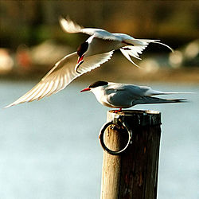
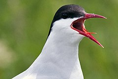

 |  |
|---|
Lai arī vēsturiskās ziņas ir trūcīgas, visticamākais, ka jūras zīriņš kā caurceļotājs Latvijā ir bijis sastopams vismaz jau 19. gadsimtā. Latvijā tas ir rets ligzdotājs un ligzdošana pārliecinoši pierādīta tikai 1970. gados, bet 1990. gados ligzdotāju skaits sasniedza 65-110 pāru. Latvijā tas sastopams jūras piekrastē un jūrā, īpaši caurceļošanas laikā. Iekšzemē tikpat kā neieceļo, atskaitot ligzdotājus Daugavas lejtecē. Iekšzemes rajonos, kas nerobežojas ar jūru zināms tikai viens novērojums. Pēdējos desmit gados to skaits Latvijā ir samazinājies vairāk kā par 30%. Tāpēc arī šī suga bija iekļauta Latvijas Sarkanajā grāmatā un Latvijas Republikas Ministru Kabineta noteikumos.
Jūras zīriņš ir slaids, vidēji liels jūras putns ar šauriem, gariem spārniem. Pieauguša putna apspalvojums augšpusē ir gaiši pelēks, apakšpusē balts, vaigi balti, galvas virsa melna. Garā, šķeltā aste balta, ar pelēkām ārējām spalvām. Taisnais knābis un kājas tumši sarkanas.
Jūras zīriņš ir ievērības cienīgs ar to, ka tas veic visgarāko regulāro migrāciju no visiem zināmajiem dzīvniekiem pasaulē. Vienlaicīgi tas izbauda visvairāk gaišās diennakts stundas savā dzīvē, salīdzinot ar citiem dzīvniekiem. No ziemeļu puslodes ziemot tas dodas uz dienvidu puslodes antarktiskajiem apgabaliem jeb Antarktīdu. Migrācijas ceļa kopējais garums jūras zīriņiem, kas ligzdo Islandē un Grenlandē ir aptuveni 70 900 kilometri, lai gan daži indivīdi nolido daudz garāku ceļu.
Jūras zīriņš kā visi zīriņi galvenokārt barojas ar nelielām zivtiņām. Tas barojas arī ar vēžveidīgajiem, abiniekiem, gliemjiem, jūras tārpiem un retos gadījumos arī ar sauszemes kukaiņiem un ogām.
Ligzdot jūras zīriņš sāk 3—4 gadu vecumā.[19] Pāris tiek izveidots uz mūžu un tas atgriežas ligzdot vienā un tajā pašā vietā katru gadu.
Vietu ligzdas iekārtošanai izvēlas pāris kopīgi.Kad izvēlēta ligzdas vieta, putni sapārojas. Ligzda parasti ir neliela iedobe zemē, tā var būt un var arī nebūt izklāta ar sausu zāli vai citu līdzīgu materiālu. Dējumā ir 1—3 olas, visbiežāk divas.